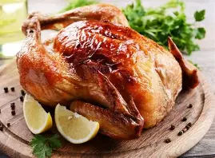
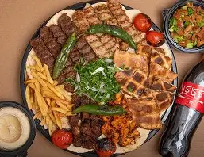
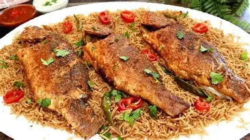
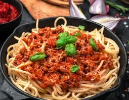

المطبخ: البحر المتوسط تصنيف الطعام: ماكولات بحرية مكونات: سمك فاروط (او اي نوع تفضله) وشرائح ليمون ,ثم ثوم مفروم,بقدونس ,وزيت زيتون صلصة: صلصة الترتار (ماينويز ,ومخلل مفروم ,شبت,زعصير ليمون) او صلصة الزيت والليمون التقليدية
SF-002
وجبة دجاج
90000

المطبخ: طبق عالمي يعد بمختلف المطابخ تصنيف الطعام: طبف رئيسي/برونين مكونات: دجاجة,كاملة,أعشاب(اكليك الجبل,زعتر) صلصة: المرق المحضر من عصارة الدجاج والدقيق او الصلصة الثومية الشهيرة في المطبخ العربي
SF-003
مشويات مشكلة
150000

المطبخ: الشرقي والتركي تصنيف الطعام: مشويات ,طبق شعبي فاخر مكونات: لحم ضان (للكباب) ,قطع صدور دجاج,قطع لحم ,التتبيلة (بصل,بهارات مشكلة ,خل,وزبادي دجاج) صلصة: سلطة الطحينية (طحينية ,ليمون,خل,كمون)
SF-004
صيادية السمك
100000

المطبخ: الشامي / اللبناني تصنيف الطعام: طبف ارز وماكولات البحرية مكونات: ارز بسمتي او مصري ,سمك (هامور او كنعاد ) ,بصل بكميات كبيرة ,بهارات صيادية (كمون ,كزبرة ,قرفة ,بهار حلو) ,صنوبر ولوز محمص صلصة: صلصة طرطور (طحينية ,عصير ليمون ,ثوم وماء لتخفيف القوام) ,"مرق صيادية البني المكثف"
SF-005
باستا بولونيز
200000

المطبخ: إطالي تصنيف الطعام: طبق الرئيسي مكونات: معكرونه ,لحم مفروم ناعم,جزر ومرفس وبصل (مقطع صغير جدا) ,وجبن بارميزان للوجه صلصة: صلصة البولوميز,تتكون من طماطم مقشرة ومعجون طماطم ,وتطبخ مع الخضار واللحم وزيت الزيتون